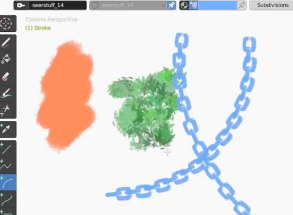

Brush Import #
Through the Import/Export sidebar panel, the user can load brushes of some other painting software's file formats into Blender and extract their textures to create Grease Pencil materials/brushes. Currently, the following formats are supported:
.abrbrushes that are commonly used in Adobe Photoshop, GIMP and Krita..gbrbrushes of GIMP..brushor.brushsetfiles exported from Procreate..sutbrushes exported from Clip Studio Paint.

Please be sure to follow the license and terms of service of the original brush, especially for those acquired from an asset store, which usually prohibits some behaviors such as redistribution.
In addition, author information may not be preserved when importing a brush. If the brush requires attribution, please do it manually.
It may take a long time to parse high resolution (e.g.
2500px * 2500px) brushes, because the brush images need to be uncompressed. The time further increases if the file contains multiple brushes.If you want to use the high resolution brushes repeatedly, you may consider save the brushes in a
.blendfile and link/append from it in the future, which may be faster than importing the brushes all over again.
Brush Parameters #
Since all these brush formats are designed for raster graphics and work in a different way from Grease Pencil, this add-on in fact only extracts the images from the brush file and use them as textures of new materials/brushes. All the original brush parameters will not be preserved.
You can select an existing Grease Pencil brush as a template in the import options. All newly generated brushes will use the parameters of this template brush.
Color Modes #
Except some RGB .gbr brushes (which are not very common), A brush usually has only a single color channel as the texture. You can choose to use this channel as either alpha/transparency or the grayscale color in the import options.
When using the channel as alpha, you can specify black or white as the texture color.
Save Brush Icons #
Despite the brush textures saved in the .blend file, the brush thumbnails shown in the Tool panel are separate image files, and have to be saved outside the .blend file.
There is an option specifying where to save these files. Deleting them will stop the brush from showing its thumbnail. Nevertheless, the brush itself will not be impacted.
Additional Notes #
GIMP Brushes #
Though not very common, some .gbr brushes are polychrome with 3 channels. Their textures can be parsed as RGB images into Blender.
Procreate Brushes #
Please note that only third-party brushes can be imported into Blender. When Procreate exports a default brush, the file contains only brush parameters, but not textures, which cannot be used by software other than Procreate itself.
A Procreate brush can use an additional texture called Grain. Since a Grease Pencil material cannot use multiple textures in this way, this grain texture will be separately imported as a material with a fill texture.
The add-on can read some parameters from Procreate brushes and convert them to Blender brush parameters. However, it is not guaranteed that the display and user experience can be perfectly reproduced.
SUT Brushes #
Clip Studio Paint has some brush features that are not available in Blender.
- Duo color is not supported, while the texture can be imported in black and white. You may want to set a smaller color blend value for imported duo-color brushes to achieve a better result.
- One
.sutbrush may have multiple textures, which are sampled randomly during drawing. Since Blender does not support multiple textures, each texture will be converted to a separate brush.
(The example brushes shown in this page is from the SeerStuff set created by SeerLight.)